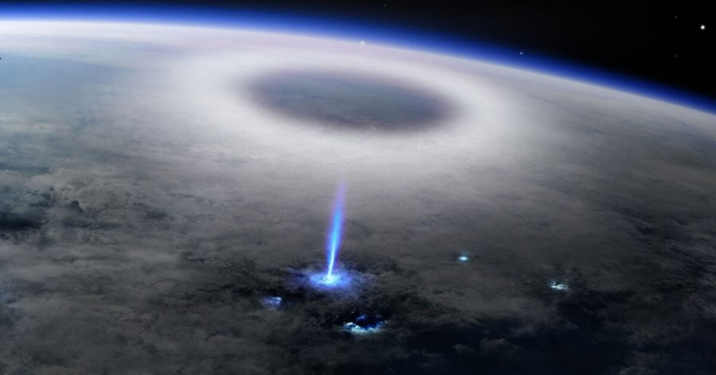

မိုးကြိုး မုန်တိုင်းတွေ ဖြစ်ပေါ်တဲ့ အခါမျိုးမှာ ကမ္ဘာမြေပြင်က ကြည့်ရင် ကောင်းကင် တခွင်လုံး လျှပ်စီးတွေ ထိန်ထိန်ညီး နေတာကို မြင်တွေ့ ကြရမှာ ဖြစ်ပါတယ်။ ဒါပေမယ့် ကမ္ဘာပေါ် ကနေ မမြင်တွေ့ ရတဲ့ မိုးကြိုးမုန်တိုင်း ဖြစ်စဉ် အများအပြား ရှိနေပါသေးတယ်။
အခု ပုံမှာ မြင်တွေ့ရတာကတော့ ပစိဖိတ် သမုဒ္ဒရာ အတွင်းက နော်ရူး (Nauru) ဆိုတဲ့ ကျွန်းလေး ရဲ့ အပေါ်က မိုးတိမ်တွေ ကြားထဲမှာ ဖြစ်ပေါ်တဲ့ မိုးကြိုးမုန်တိုင်း အတွင်း တွေ့လိုက်ရတဲ့ အပြာရောင် မိုးကြိုးတန်း တစ်ခုရဲ့ ဓါတ်ပုံပဲ ဖြစ်ပါတယ်။
ဒီ ဓါတ်ပုံကို အပြည်ပြည် ဆိုင်ရာ အာကသ စခန်းပေါ်က ကင်မရာ ကနေ ရိုက်ကူး ထားခဲ့တာ ဖြစ်ပါတယ်။ ဒီ ဖြစ်စဉ် ဖြစ်ပျက်ခဲ့တာဟာ ၂၀၁၉ ဖေဖော်ဝါရီ လ အတွင်းက ဖြစ်ပျက် သွားခဲ့တာ ဖြစ်ပါတယ်။
ဒီ ထူးဆန်းပြီး ရှားပါးတဲ့ အပြာရောင် မိုးကြိုးတန်း ဖြစ်စဉ်ကို Nature သုတေသန ဂျာနယ်မှာ တင်ပြ ထားပါတယ်။ ဒီ သုတေသန စာတမ်းကို အပြည်ပြည် ဆိုင်ရာ အာကာသ စခန်း ပေါ်က Atmosphere-Space Interactions Monitor (ASIM) အဖွဲ့သား များက တင်သွင်းတာ ဖြစ်ပါတယ်။
ဒီ ASIM အဖွဲ့ဟာ အပြည်ပြည် ဆိုင်ရာ အကာသ စခန်းပေါ်မှာ တပ်ဆင်ထားတဲ့ ပုံဖမ်း ကင်မရာတွေ၊ ခရမ်းလွန် ရောင်ခြည် အာရုံခံ ကိရိယာတွေ၊ X-ray နဲ့ ဂမ္မာရောင်ခြည် အာရုံခံ ကိရိယာ တွေကို အသုံးပြုပြီး ကမ္ဘာ အပြင်ဖက် အာကာသ အတွင်း ဖြစ်ပေါ်တဲ့ မိုးကြိုးမုန်တိုင်း ဖြစ်စဉ် တွေကို ရှာဖွေ လေ့လာနေတာ ဖြစ်ပါတယ်။
အခု တင်သွင်းတဲ့ စာတမ်းမှာ ဒီ အပြာရောင် မိုးကြိုး နဲ့ ပါတ်သက်တဲ့ အချက်တွေသာမက သူနဲ့အတူ တွဲဖက် ဖြစ်ပေါ်တဲ့ မိုးကြိုး အငယ်စား ၄ ခု အကြောင်းကိုလဲ တင်ပြ ထားပါတယ်။ ဒီ မိုးကြိုးငယ် ၄ ခုဟာ တိမ်တောင်တွေရဲ့ အပေါ်ပိုင်းမှာ ဖြစ်ပေါ်ခဲ့တာ ဖြစ်ပါတယ်။
ဒီ မိုးကြိုးငယ်တွေ ကတော့ လေထုရဲ့ ဒုတိယ အလွှာဖြစ်တဲ့ စထရာတို စဖီးယား အလွှာ (stratosphere) ထဲထိ ဝင်ရောက်လာ ခဲ့ခြင်း မရှိခဲ့ ပါဘူး။ ဒီ့အစာ ဒီ မိုးကြိုးငယ် တွေဟာ လေထုရဲ့ ပထမ အလွှာ ဖြစ်တဲ့ ထရိုပိုစဖီးယား အလွှာ အတွင်းမှာပဲ ဖြစ်ပေါ်ခဲ့ ကြတာ ဖြစ်ပါတယ်။
ဒီ အပြာရောင် မိုးကြိုး ဘယ်လိုလုပ် ဖြစ်ပေါ်လာရ သလဲ ဆိုတာနဲ့ပါတ်သက်လို့ ပညာရှင်တွေ ဖြေရှင်းနိုင်စွမ်း မရှိသေး ပါဘူး။ ဒါပေမယ့် ဒီ စာတမ်း တင်သွင်းတဲ့ သုတေသီ တွေကတော့ ဒီ အပြာရောင် မိုးကြိုးတွေဟာ မိုးတိမ်တောင် တွေရဲ့ အဖို စွန်း နဲ့ အမစွန်း တွေရဲ့ လျှပ်စစ် ဝင်ရိုး ပြောင်းပြန် ပြောင်းလဲမှုကြောင့် ဖြစ်ပေါ် လာတယ်လို့ အဆို တင်ပြ ထားပါတယ်။
မိုးတိမ် တောင်တွေ အတွင်း မိုးကြိုးမုန်တိုင်း ဖြစ်ပေါ်တဲ့ အခါ အဖိုဓါတ် ဆောင်တဲ့ တိမ်လွှာ ခြမ်း နဲ့ အမဓါတ် ဆောင်တဲ့ တိမ်လွှာ ဖက်ခြမ်းတွေ ဖြစ်ပေါ် လာခဲ့ပါတယ်။ ဒါပေမယ့် ရံဖန်ရံခါမှာ ဒီ အဖိုခြမ်း နဲ့ အမဖက်ခြမ်း တွေဟာ ရုတ်တရက် ပြောင်းပြန် နေရာ ပြောင်းလဲမှု ဖြစ်ပေါ် တတ်ကြပါတယ်။
ဒီလို ရုတ်တဖက် ဖို-မ ဝင်ရိုးစွန်း နေရာ ပြောင်းမှု ဖြစ်ပေါ်တဲ့ အခါမှာ မူလက သိမ်းဆည်းထားတဲ့ တည်ငြိမ်လျှပ်စစ် (static electricity) တွေ ပြန်ထွက်လာပါတယ်။ ဒီ ထွက်လာတဲ့ တည်ငြိမ် လျှပ်စစ် တွေကို တိမ်တွေရဲ့ အပေါ်ပိုင်းမှာ အပြာရောင် လျှပ်စီး တွေအဖြစ် မြင်ကြရတာ ဖြစ်ပါတယ်။
ဒီ စာတမ်း မှာပဲ ပင်မ အပြာရောင် မိုးကြိုး နဲ့ အတူ တွဲဖြစ်တဲ့ မိုးကြိုးငယ် ၄ ခု အကြောင်းနဲ့ သူတို့ ဘယ်လို ဖြစ်ပေါ်လာခဲ့ သလဲဆိုတာကိုလဲ တင်ပြ ထားပါတယ်။
ဒီ မိုးကြိုးငယ် ၄ ခုဟာ ELVES လို့ခေါ်တဲ့ မိုးကြိုး အမျိုးအစားတွေ ဖြစ်ကြပါတယ်။ Emissions of Light and Very Low Frequency Perturbations due to Electromagnetic Pulse Sources (ELVES) အမျိုးအစား မိုးကြိုးတွေဟာ လေထုရဲ့ အိုင်ယွန်နို စဖီးယား (ionosphere) လေထုလွှာ အတွင်းက အနှုတ် လက္ခာ ဆောင်တဲ့ အီလက်ထရွန် မှုန်တွေ ကို ရေဒီယို လှိုင်းတွေက တွန်းထိုး ဖယ်ရှား သွားတဲ့ အချိန်မှာ ထွက်ပေါ်လာတဲ့ လျှပ်စီးလေးတွေ ဖြစ်ပါတယ်။
အိုင်ယွန်နို စဖီးယား လေထုအလွှာဟာ ကမ္ဘာ မြေပြင်အထက် မိုင် ၅၀ က စပြီး မိုင် ၆၀၀ အမြင့်လောက်ထိ ကျယ်ပြန့်တဲ့ လေထု အလွှာ ဖြစ်ပါတယ်။
ဒီ အိုင်ယွန်နို စဖီးယား အလွှာအတွင်းမှာ လွတ်လပ်နေတဲ့ အဖိုဓါတ်ဆောင် အိုင်ယွန်းတွေနဲ့ အမဓါတ်ဆောင် အီလက်ထရွန် တွေ အများအပြား ပြန့်လွင့်နေ ကြပါတယ်။ ဒီ အီလက်ထရွန်တွေ အခြား လျှပ်စစ်ဓါတ်မှုန် တွေနဲ့ တိုက်မိ ကြတဲ့ အခါမှာ စွမ်းအင်တွေ ထွက်လာပါတယ်။ ဒီ စွမ်းအင်တွေကို အလင်းရောင် အနေနဲ့ တွေ့ကြရတာ ဖြစ်ပါတယ်။
အခု အပေါ်မှာ တင်ပြခဲ့တဲ့ ELVES မိုးကြိုးငယ် တွေဟာ ဒီနည်းနဲ့ ဖြစ်ပေါ်လာ ကြတာ ဖြစ်ပါတယ်။
ဒီ စာတမ်းမှာ တင်ပြထားတဲ့ အပြာရောင် မိုးကြိုးနဲ့ ပါတ်သက်လို့တော့ ဆက်လက် လေ့လာစရာ အများအပြား ကျန်ရှိ နေပါသေးတယ်။ ဒီလိုပဲ ELVES မိုးကြိုးတွေနဲ့ အခြား သဘာဝ အလင်းရောင် ဖြစ်ပေါ်စေတဲ့ အကြောင်းရင်း တွေနဲ့ ပါတ်သက်လို့လဲ မသိသေးတာတွေ အများအပြား ကျန်ရှိ နေပါတယ်။
ဒီ သဘာဝ ဖြစ်စဉ်တွေကို လေ့လာဖို့ အပြည်ပြည် ဆိုင်ရာ အာကာသစခန်းပေါ်မှာ တပ်ဆင်ထားတဲ့ ကိရိယာ တွေဟာ အများကြီး အထောက်အကူ ဖြစ်စေမှာ ဖြစ်တယ်လို့ ပညာရှင် တွေက မှတ်ချက် ပြုကြပါတယ်။
ဒီ ဖြစ်စဉ်တွေကို လေ့လာတာဟာ ပညာရှင် တွေအတွက် အပျော် သက်သက် မဟုတ်ပါဘူး။ ဒီ သဘာဝ ဖြစ်စဉ်တွေဟာ ကမ္ဘာ မြေပြင်က ရာသီဥတု ပြောင်းလဲ ဖြစ်ပေါ်မှုတွေကို ပိုမို နားလည်ဖို့ အရေးပါတဲ့ သောချက်တွေ ဖြစ်တယ်လို့ ပညာရှင် တွေက ယုံကြည် ကြပါတယ်။
ဒီလို ရာသီဥတု ပြောင်းလဲမှု တွေအပေါ် အကျိုးသက်ရောက်မှု ရှိရုံတင် မက ကမ္ဘာ့လေထုရဲ့ ဖန်လုံအိမ် ဓါတ်ငွေ့ (Greenhouse gases) တွေ ဖြစ်ပေါ်မှု အပေါ် ဒီ မိုးကြိုးတွေက ဘယ်လို အကျိုးသက်ရောက်မှု ရှိသလဲ ဆိုတာနဲ့ ပါတ်သက်တဲ့ မေးခွန်းကို လဲ အဖြေပေးနိုင်ဖို့ အရေးပါပါတယ်။
အခု စာတမ်းနဲ့ ပါတ်သက်လို့ ဥရောပ အာကာသ အေဂျင်စီရဲ့ ရူပဗေဒ သိပ္ပံ ဌာန ညှိနှိုင်းရေးမှူး (European Space Agency’s Physical Sciences Coordinator for human and robotic spaceflight) ဖြစ်သူ အက်စထရစ် အော (Astrid Orr) က ယခုလို မှတ်ချက် ပေးပါတယ်။
“ဒီ သုတေသန စာတမ်းဟာ ASIM က လေ့လာ နေတဲ့ မိုးကြိုးမုန်တိုင်းတွေ အပေါ်က သဘာဝ ဖြစ်စဉ် အသစ်အဆန်း တွေနဲ့ ပါတ်သက် လို့ ထူးခြားမှုကို လှစ်ဟ ပြနေတာပဲ ဖြစ်ပါတယ်။ ဒီစာတမ်းက ကျွန်တော်တို့ အနေနဲ့ စကြာဝဠာ အတွင်းမှာ လေ့လာ ရှာဖွေ တွေ့ရှိ စရာတွေ အများအပြား ကျန်ရှိနေ သေးတယ် ဆိုတာကို မီးမောင်းထိုး ပြနေတာပဲ ဖြစ်ပါတယ်။”
Ref: Rare ‘blue jet’ lightning spotted and photographed from space | Popular Science
ကမ္ဘာ့လေထု အထက်လွှာက ထူးဆန်းတဲ့ အပြာရောင် မိုးကြိုး တန်း

March 15, 2023
Other Posts
- UFO နဲ့ပါတ်သက်တဲ့ ပထမဆုံးအစည်းအဝေး နာဆာကျင်းပ
- ကြယ်သေကို ပတ်နေတဲ့ ဂြိုဟ်ပျက်ကြီး တစ်လုံးရှာတွေ့
- နေအဖွဲ့အစည်းအတွင်း သက်ရှိတွေ ရှိနေနိုင်တဲ့ လ ၆ စင်း
- သက်ရှိတွေ ရှိနေနိုင်တဲ့ ဂြိုဟ်ရှာတွေ့
- ကမ္ဘာကို ဥက္ကာပျံတွေ အန္တရာယ်က ကာကွယ်ပေးမယ့် ကာကွယ်ရေး စနစ်
- သဲနဲ့ လျှပ်စစ်အားပဲသုံးမယ့် ကွန်တိန်နာအရွယ် ဆိုလာပြားထုတ်စက်
- ပြင်ပကမ္ဘာက သက်ရှိတွေကို လေထုညစ်ညမ်းမှုမှ ရှာဖွေရန် နာဆာ အဆိုပြု
- ကမ္ဘာ့ရေချိုကန်များ အလျှင်အမြန် ခမ်းခြောက်လာနေ
- နေအတုလုပ်ဖို့ နီးစပ်ပြီလား
- သက်ရှိတွေ ရှိနေနိုင်တဲ့ Hycean ဂြိုလ်